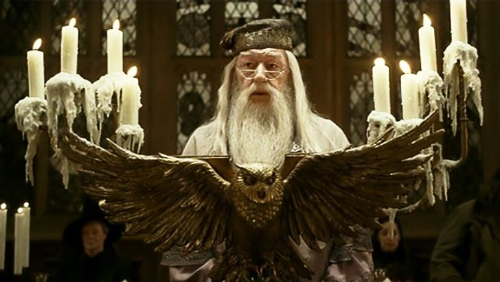
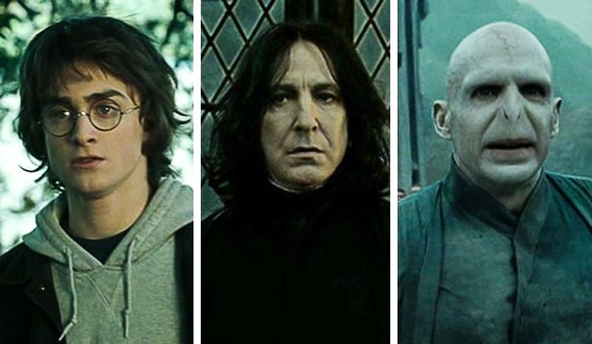
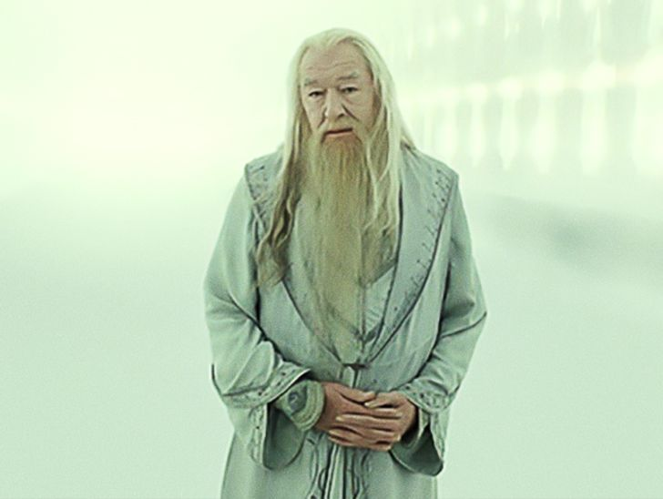
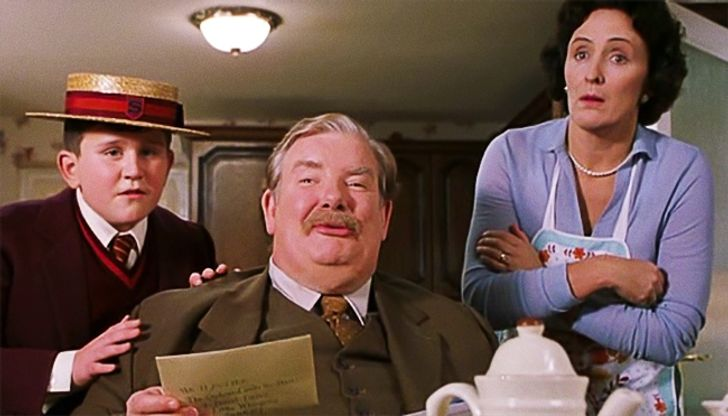
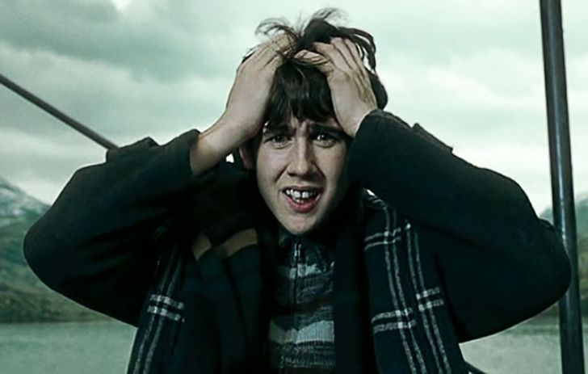
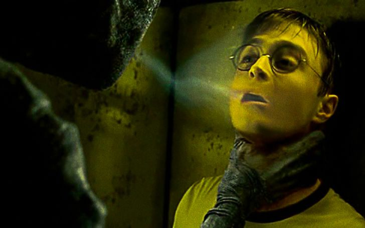
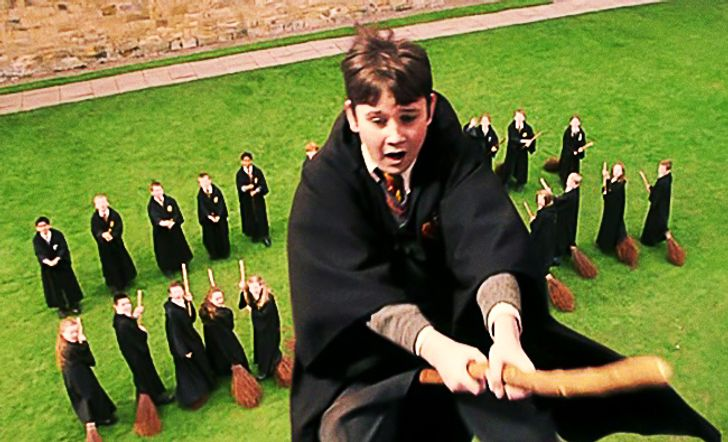
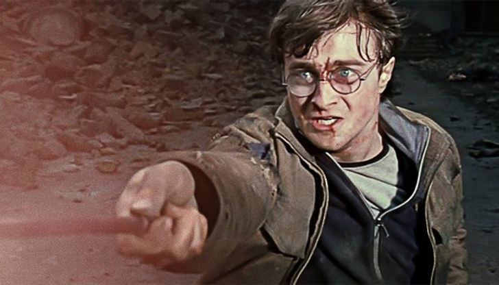
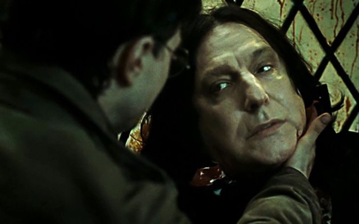
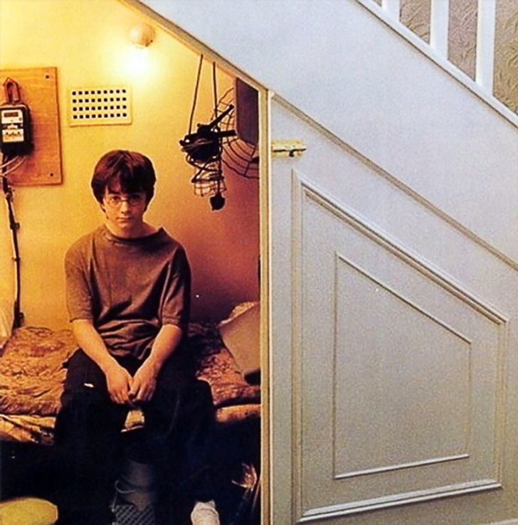

10. Большая игра профессора Дамблдора
Эта теория заключается в том, что на протяжении всей истории профессор Дамблдор ведет некую сложную, продуманную на много ходов вперед игру. Целью игры является победа в войне с Волдемортом, где ключевая роль принадлежит Гарри Поттеру. Однако Гарри вводится в игру еще ребенком, и, чтобы правильно подготовить его к финальной битве, Дамблдор идет на разные ухищрения. Множество деталей подтверждают то, что все испытания подготовлены Дамблдором специально для Гарри. Например, уже в самом начале можно обратить внимание, что такой опасный артефакт, как философский камень, охраняется испытаниями, которые может преодолеть первокурсник.
Всеведущий профессор, хоть и остается за кулисами, но влияет оттуда на все события и многих персонажей. Он как великий манипулятор ведет свою сложную партию в шахматы, фигуры которой позже постепенно выходят из-под контроля.
9. Гарри, Снейп и Волдеморт — это братья из сказки "Дары Смерти"
Знаменитый Бард Бидль написал сказку "Дары Смерти", в которой повествуется о трех братьях Певерелл. Сказка появляется в истории затем, чтобы рассказать о трех дарах — Бузинной палочке, Воскрешающем камне и Мантии-невидимке. Но можно также отметить, что здесь есть параллель между персонажами. Волдеморт стремится заполучить Бузинную палочку и обладать безграничной властью, что делает его похожим на старшего брата из сказки. Средний брат — это Северус Снейп, поскольку он одержим своей потерянной любовью Лили Поттер. Младший брат — это Гарри. Он получил Мантию-невидимку и не боится встречи со Смертью.
Но есть в этой истории еще и четвертый персонаж, который всех связывает воедино, — это Дамблдор. Из чего следует, что...
8. Дамблдор — это смерть
Дамблдор был единственным, кто владел всеми Дарами до того, как их получил Гарри. Именно он дал Гарри Мантию-невидимку, затем Воскрешающий камень. А Бузинной палочки Дамблдор лишился только в поединке с Драко Малфоем. Пусть и косвенно, но он причастен к смерти Волдеморта и Снейпа. А когда Гарри "умирает", его встречает Дамблдор как "старого друга". Довольно символично.
7. Гарри плохо влиял на Дурслей
Дурсли испытывали необъяснимо сильную неприязнь к Гарри. Очевидно, что неожиданно подкинутый на порог ребенок был для них обузой. И все же тяжело оправдать их категоричное поведение. Фанаты предполагают, что все дело в том, что Гарри был крестражем. И своим присутствием оказывал на своих родных негативное влияние. Когда Рон, Гермиона и Гарри по очереди носили на шее крестраж в медальоне Слизерина, то становились злыми и подозрительными, с трудом контролировали свои эмоции. Так и в этом случае можно предположить, что частица души Темного Лорда внутри юного волшебника могла плохо повлиять на Дурслей за 10 лет жизни под одной крышей. Однако в этом случае непонятно, почему крестраж внутри Гарри не влиял на Рона, Гермиону и других волшебников из его окружения.
6. Невилл — настоящий "мальчик, который выжил"
Невилл Лонгботтом рожден на исходе 7-го месяца, его родители не раз бросали вызов Волдеморту, он также гриффиндорец. К нему, как и к Гарри, подходит пророчество Трелони. В отличие от Гарри, у Невилла был дар — он великолепно разбирался в травологии. Кроме того, в конце именно Невилл уничтожил змею, верную спутницу Темного Лорда и его главный крестраж.
Эта тема поднималась и самой Роулинг. Но фанаты пошли дальше, предположив, что Орден Феникса знал с самого начала о предназначении Невилла и ради спасения специально поменял его местами с удачно подвернувшимся мальчиком Гарри. Так это или нет, но Темный Лорд явился в дом Поттеров, что и дало начало истории.
5. Гарри боится дементоров не просто так
Гарри боится дементоров больше остальных, они действуют на него сильнее, чем на окружающих. Вполне вероятно, дементоры предпочитают его больше прочих, потому что Гарри крестраж. Это значит, что у него внутри частица души Волдеморта, следовательно, он обладает 1,125 души, что и делает его "вкуснее" для дементоров.
4. Невилл не был плохим волшебником, просто он использовал не ту волшебную палочку
В первые годы учебы в Хогвартсе Невилл не мог справиться даже с простейшими заклинаниями. И хотя его родители были могущественными волшебниками, Невилл считал себя почти сквибом. Позже Невилл все-таки проявил себя: возглавил Отряд Дамблдора, успешно освоил защитные чары, выстоял в схватке с Пожирателями смерти. Возможно, это был естественный процесс взросления, но нельзя не принять во внимание, что в самом начале Невилл пользовался палочкой своего отца. Как известно, именно палочка выбирает волшебника. Если использовать чужую палочку, та не будет служить волшебнику должным образом. В поединке с Пожирателем смерти ее уничтожили, и Невилл наконец прошел процесс выбора палочки. Эта перемена позволила юному волшебнику раскрыть свой магический потенциал: его магические способности заметно улучшились, он яростно бился в Битве за Хогвартс, убил змею Нагайну и в итоге стал профессором травологии. А вечно недовольная бабушка наконец смогла гордиться внуком.
3. Гарри бессмертен
"Один из них должен погибнуть от руки другого, ибо ни один не может жить спокойно, пока жив другой". Так звучит пророчество Сивиллы Трелони о связи Гарри Поттера и Волдеморта. Основная интерпретация заключается в том, что Гарри суждено убить злого волшебника или быть убитым им, третьего не дано. Но существует и другое объяснение пророчества, предложенное поклонниками истории. Если один из них должен умереть от руки другого, то выживший становится бессмертным, поскольку может быть убит лишь противником, оговоренным в предсказании Сивиллы. Таким образом, Гарри выполнил условия пророчества и, возможно, обрел бессмертие.
2. Снейп на самом деле не умер
Северус Снейп был специалистом по зельеварению и "двойным агентом" много лет, поэтому вполне вероятно, что у него могло быть припасено противоядие на случай разоблачения. Кроме того, его тело не было найдено среди жертв Битвы за Хогвартс. И когда Гарри использовал Воскрешающий камень, его призрак не явился, в отличие от призраков его родителей, Сириуса Блэка и Римуса Люпина.
Именно поэтому Бузинная палочка не слушается Волдеморта — ему не удалось убить Снейпа. А не потому, что палочка сперва перешла к Драко Малфою, поскольку тот разоружил Дамблдора первым.
Возможно, Северус, выполнив свой долг перед Дамблдором и возлюбленной Лили, решил начать новую жизнь на новом месте.
1. Гарри все выдумал
Что, если этих удивительных событий никогда не происходило? Что, если Гарри Поттер — это обычный мальчик, возможно, шизофреник, который жил в чулане под лестницей, и вся история происходила лишь в его голове? Это был его способ уйти от печальной реальности, в которой его брат, тетя и дядя каждый день издевались над ним.